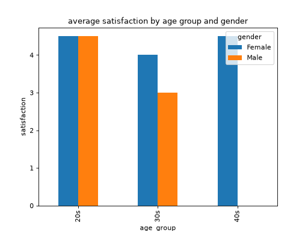
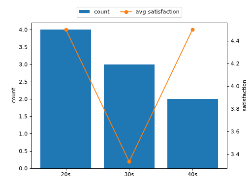

アンケート結果の集計と可視化
年代・性別ごとの満足度アンケートを例に、欠損値の処理、pivot_table によるクロス集計、そして集計結果の可視化までを一通り行います。
データの準備
import numpy as np
import pandas as pd
df: pd.DataFrame = pd.DataFrame({
"age_group": [
"20s", "20s", "30s", "30s", "40s",
"40s", "20s", "30s", "40s", "20s",
],
"gender": [
"Male", "Female", "Male", "Female", "Male",
"Female", "Female", "Male", "Female", "Male",
],
"satisfaction": [4, 5, 3, 4, np.nan, 5, 4, 3, 4, 5],
})
未回答（NaN）の行は集計から除外しておきます。
df_clean: pd.DataFrame = df.dropna(subset=["satisfaction"])
年代 × 性別のクロス集計
pivot_table を使って、年代別・性別ごとの平均満足度を集計します。
pivot: pd.DataFrame = df_clean.pivot_table(
index="age_group", columns="gender", values="satisfaction", aggfunc="mean"
)
print(pivot)
# gender Female Male
# age_group
# 20s 4.5 4.5
# 30s 4.0 3.0
# 40s 4.5 NaN
40s の Male のように、該当するデータが存在しない組み合わせは NaN になります。
DataFrame.plot() で棒グラフにすると、年代ごとに性別を並べて比較できます。
import numpy as np
import pandas as pd
from matplotlib.axes import Axes
df: pd.DataFrame = pd.DataFrame({
"age_group": [
"20s", "20s", "30s", "30s", "40s",
"40s", "20s", "30s", "40s", "20s",
],
"gender": [
"Male", "Female", "Male", "Female", "Male",
"Female", "Female", "Male", "Female", "Male",
],
"satisfaction": [4, 5, 3, 4, np.nan, 5, 4, 3, 4, 5],
})
df_clean: pd.DataFrame = df.dropna(subset=["satisfaction"])
pivot: pd.DataFrame = df_clean.pivot_table(
index="age_group", columns="gender", values="satisfaction", aggfunc="mean"
)
ax: Axes = pivot.plot(
kind="bar", title="average satisfaction by age group and gender"
)
ax.set_ylabel("satisfaction")



回答者数と平均満足度を重ねて見る
年代ごとの「回答者数」と「平均満足度」は単位が異なるため、twinx を使って 1 つのグラフに重ねます。
import numpy as np
import pandas as pd
import matplotlib.pyplot as plt
from matplotlib.axes import Axes
from matplotlib.figure import Figure
df: pd.DataFrame = pd.DataFrame({
"age_group": [
"20s", "20s", "30s", "30s", "40s",
"40s", "20s", "30s", "40s", "20s",
],
"gender": [
"Male", "Female", "Male", "Female", "Male",
"Female", "Female", "Male", "Female", "Male",
],
"satisfaction": [4, 5, 3, 4, np.nan, 5, 4, 3, 4, 5],
})
df_clean: pd.DataFrame = df.dropna(subset=["satisfaction"])
counts: pd.Series = df_clean.groupby("age_group").size()
avg_satisfaction: pd.Series = df_clean.groupby("age_group")[
"satisfaction"
].mean()
fig: Figure
ax1: Axes
fig, ax1 = plt.subplots()
ax1.bar(counts.index, counts.values, color="tab:blue", label="count")
ax1.set_ylabel("count")
ax2: Axes = ax1.twinx()
ax2.plot(
avg_satisfaction.index, avg_satisfaction.values,
color="tab:orange", marker="o", label="avg satisfaction",
)
ax2.set_ylabel("satisfaction")
handles1, labels1 = ax1.get_legend_handles_labels()
handles2, labels2 = ax2.get_legend_handles_labels()
ax1.legend(
handles1 + handles2, labels1 + labels2,
loc="lower center", bbox_to_anchor=(0.5, 1.02), ncols=2,
)



twinx() で作成した 2 つの Axes（ax1 と ax2）は、それぞれ別々の凡例を持ちます。そのため、get_legend_handles_labels() で両方の凡例情報（ハンドルとラベル）を取得し、まとめて 1 つの凡例として表示しています。